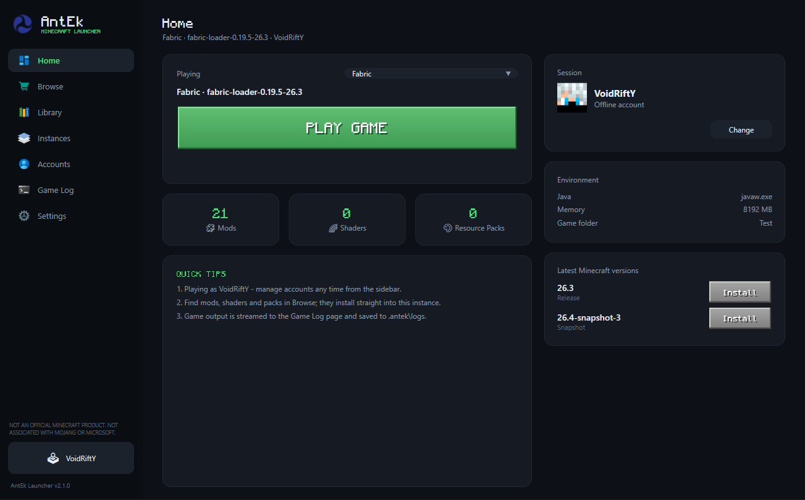

Every Minecraft version
Releases, snapshots and old versions straight from the official Mojang manifest, installed and verified automatically.
v2.1.0 Free Windows 10 & 11
Isolated instances, one-click mod loaders, hash-verified Modrinth downloads and skins that actually show up — wrapped in a launcher that respects your machine. No ads. No telemetry. Nothing bundled.

Everything in one place
One launcher for versions, loaders, content and accounts — without the clutter other launchers pile on top.
Releases, snapshots and old versions straight from the official Mojang manifest, installed and verified automatically.
Fabric, Quilt, Forge and NeoForge install on top of any supported version — and the picker only offers combinations that truly work.
Each instance gets its own .minecraft folder — mods, shaders, resource packs, saves and configs never collide.
Browse and install mods, shaders, resource packs and modpacks with hash-verified downloads and authentic project icons.
Enable, disable, import or remove content per instance. Names, versions and descriptions are read from the files themselves.
Microsoft sign-in through the device-code flow — or offline profiles with Java-compatible UUIDs.
Upload skins to Mojang for Microsoft accounts; local skins deploy for offline profiles and work in singleplayer too.
stdout and stderr stream to a dedicated log page and are saved to disk per session — never dumped into your main view.
Privacy & safety
A launcher should earn your trust, not ask for it. Here is exactly what AntEk does on your PC, and everything it refuses to do.
%APPDATA%\.antek.Every release is published openly on GitHub, with a SHA-256 checksum you can compare before installing. Nothing is hidden behind a mirror or a "download manager".
A closer look
Real screenshots from the launcher — no mockups, no marketing gloss. Click one to enlarge.
Engineering
The parts you never see are the parts that matter most.
No telemetry, no analytics, no background services. Everything AntEk knows about you lives in one folder on your own machine.
Game files, mods and packs are checked against their published hashes before they ever touch your instance.
Strict version and loader compatibility checks turn raw HTTP errors into clear, human messages — before anything breaks.
Standard Minecraft folder layouts, Modrinth's public API and CmlLib.Core under the hood. Move your files whenever you like.
Getting started
No account needed to begin, no configuration files to edit.
Run the small setup. It installs for your Windows account — no administrator rights, no extras.
Use Microsoft sign-in for online play, or create an offline profile for singleplayer.
Choose a Minecraft version, add a mod loader if you like, then hit Play. AntEk fetches the rest.
Get started
Free, forever. One small setup that installs the launcher for your Windows account — no admin rights, no bundled toolbars, no surprises.
Open the release notes and compare the file's SHA-256 with the value listed there. In PowerShell you can run
certutil -hashfile AntEk-Setup.exe SHA256 — the two should match exactly.
FAQ
AntEk contains no ads, no trackers and no bundled extras. Its installer only writes to its own program folder and shortcuts, and the app keeps all of your data locally. You can uninstall it from Windows Settings at any time.
The launcher itself, a Start Menu group and a Desktop shortcut, plus a normal uninstall entry in Windows Settings. Nothing else — no services, no drivers, no extras. You can review the full breakdown in the Privacy & safety section.
As with any new, independently published app, Windows SmartScreen may ask you to confirm the first launch. Every release is published openly on GitHub with a SHA-256 checksum, so you can verify the file before you run it.
Yes. Offline profiles let you play without a Microsoft account using Java-compatible UUIDs, and locally supplied skins are applied automatically — including in singleplayer.
On first launch AntEk automatically migrates an existing data folder into
%APPDATA%\.antek, so your versions, instances, accounts and skins come with you.
No. When you close the launcher there is nothing left running — no updater, no helper service, no tray app. Your PC stays yours.
No. AntEk is an independent, unofficial launcher built by Zerith Studio Official. It is not an official Minecraft product and is not approved by or associated with Mojang or Microsoft.
Nothing. AntEk is free to use. You still need a legitimate Minecraft account to play online.
Found a bug or have a question? Reports and questions are welcome — releases and updates are published on GitHub.